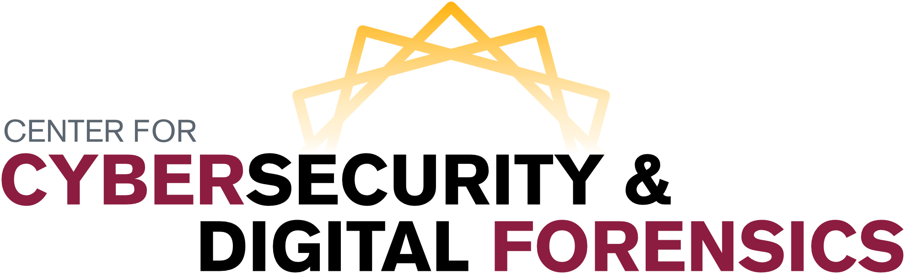

Research Interests
My research interests lay at the intersection of Computer Security and Software Verification and Validation.
Concretely, I have experience on the development of techniques for verifying the correct implementation of access control models
at the source-code level using formal specifications.
In addition, I have also worked on new approaches for federated authentication and authorization based on security-related
properties, a.k.a. attributes, in multi-organizational settings composed of different high-performance network providers. Recently, I have also explored approaches for enhancing the cybersecurity protection of mission-critical Energy
Delivery Systems (EDS), by means of security assessment and monitoring techniques.
Previous Affiliations

I was affiliated to the Center for Cybersecurity and Digital Forensics, (CDF),
as well as with the
Laboratory of Secure Engineering for Future Computing (SEFCOM)
at Arizona State University,
from 2012 to 2020.
Both centers are directed by Dr. Gail-Joon Ahn and
Dr. Adam Doupé.
The work at CDF and SEFCOM focused on a variety of topics related to computer security: access control, digital forensics, security for mobile frameworks (Android),
moving target defense, etc., and has been sponsored over the years by the US National Science Foundation, the US Department of Energy, Bank of America, Microsoft, Google, CISCO, among others.
I was also a member of the Cyber Resilient Energy Delivery Consortium (CREDC), from 2015 to 2019,
a multi-disciplinary and multi-organizational effort for protecting the
mission-critical cyber-infrastructure of Energy Delivery Systems (EDS) against security vulnerabilities and threats.
Ph.D. Dissertation
Publications: Authorization and Access Control
-
Proactive Risk Assessment for Preventing Attribute-Forgery Attacks to ABAC Policies
Carlos E. Rubio-Medrano, Luis Claramunt, Shaishavkumar Jogani and Gail-Joon Ahn
The 25th ACM Symposium on Access Control Models and Technologies (SACMAT),
Barcelona, Spain, June 10-12, 2020
(PDF)
(BibTex)
-
Effectively Enforcing Authorization Constraints for Emerging Space-Sensitive Technologies
Carlos E. Rubio-Medrano, Shaishavkumar Jogani, Maria Leitner, Ziming Zhao and Gail-Joon Ahn
The 24th ACM Symposium on Access Control Models and Technologies (SACMAT),
Toronto, Canada, June 3-6, 2019
(PDF)
(BibTex)
-
Towards Effective Verification of Multi-Model Access Control Properties
Bernhard J. Berger, Christian Maeder, Rodrigue Wete Nguempnang, Karsten Sohr, and Carlos E. Rubio-Medrano
The 24th ACM Symposium on Access Control Models and Technologies (SACMAT),
Toronto, Canada, June 3-6, 2019
(PDF)
(BibTex)
-
RiskPol: A Risk Assessment Framework for Preventing Attribute-Forgery Attacks to ABAC Policies
Carlos E. Rubio-Medrano, Ziming Zhao and Gail-Joon Ahn
3rd ACM Workshop on Attribute-based Access Control (ABAC), in conjuction with CODASPY 2018,
Tempe, AZ, USA, March 21, 2018
(PDF)
(BibTex)
-
Mutated Policies: Towards Proactive Attribute-based Defenses for Access Control
Carlos E. Rubio-Medrano, Josephine Lamp, Adam Doupé, Ziming Zhao and Gail-Joon Ahn
2017 Workshop on Moving Target Defense, in conjuction with CCS 2017,
Dallas, TX, USA, October 30, 2017
(PDF)
(BibTex)
-
Towards a Moving Target Defense Approach for Attribute-based Access Control
Carlos E. Rubio-Medrano, Josephine Lamp, Marthony Taguinod, Adam Doupé, Ziming Zhao and Gail-J. Ahn
1st ACM Workshop on Attribute-based Access Control (ABAC),
New Orleans, LA, USA, March 11, 2016
(PDF)
(BibTex)
-
Federated Access Management for Collaborative Network Environments: Framework and Case Study
Carlos E. Rubio-Medrano, Ziming Zhao, Adam Doupé and Gail-J. Ahn
ACM Symposium on Access Control Models and Technologies (SACMAT),
Vienna, Austria, June 1-4, 2015
(PDF)
(BibTex)
-
Secure Collaborations with Attribute-based Access Control
Carlos E. Rubio-Medrano, Clinton D'Souza and Gail-J. Ahn
IEEE International Conference on Collaborative Computing:
Networking, Applications and Worksharing (CollaborateCom),
Austin, TX, USA, October 20-23, 2013.
(PDF)
(BibTex)
Publications: Energy Delivery Systems
-
Toward Automated Enforcement of Cyber-Physical Security Requirements for Energy Delivery Systems
Carlos E. Rubio-Medrano, Ziming Zhao and Gail-Joon Ahn
The IEEE International Conference on Trust, Privacy and Security in Intelligent Systems, and Applications (TPS),
Virtual Event, December 3, 2020.
(PDF)
(BibTex)
-
ExSol: Collaboratively Assessing Cybersecurity Risks for Protecting Energy Delivery Systems (Extended Version)
Josephine Lamp, Carlos E. Rubio-Medrano, Ziming Zhao and Gail-Joon Ahn
ACM Digital Threats: Research and Practice (DTRAP),
Journal, December 31, 2020.
(PDF)
(BibTex)
-
HoneyPLC: A Next-Generation Honeypot for Industrial Control Systems
Efrén López Morales, Carlos E. Rubio-Medrano, Adam Doupé, Yan Shoshitaishvili, Ruoyu Wang Tiffany Bao and Gail-Joon Ahn
The ACM Conference on Computer and Communications Security (CCS) 2020,
Virtual Event, November 9-13, 2020.
(PDF)
(BibTex)
-
ExSol: Collaboratively Assessing Cybersecurity Risks for Protecting Energy Delivery Systems
Josephine Lamp, Carlos E. Rubio-Medrano, Ziming Zhao and Gail-Joon Ahn
The 7th IEEE Workshop on Modeling and Simulation of Cyber-Physical Energy Systems (MSCPES 2019),
Montreal, Canada, April 15th, 2019
(PDF)
(BibTex)
-
ExSol: Collaboratively Assessing Cybersecurity Risks for Protecting Energy Delivery Systems
Josephine Lamp, Carlos E. Rubio-Medrano, Ziming Zhao and Gail-Joon Ahn
The 7th IEEE Workshop on Modeling and Simulation of Cyber-Physical Energy Systems (MSCPES 2019),
Montreal, Canada, April 15th, 2019
(PDF)
(BibTex)
-
EDSGuard: Enforcing Network Security Requirements for Energy Delivery Systems
Vu Coughlin, Carlos E. Rubio-Medrano, Ziming Zhao and Gail-Joon Ahn
IEEE International Conference on Communications, Control and Computing Technologies for Smart Grids (SmartGridComm 2018) (To Appear),
Aalborg, Denmark, October 29 - November 1, 2018
(PDF)
(BibTex)
-
OntoEDS: Protecting Energy Delivery Systems by Collaboratively Analyzing Security Requirements
Josephine Lamp, Carlos E. Rubio-Medrano, Ziming Zhao and Gail-Joon Ahn
3rd IEEE International Conference on Collaboration and Internet Computing,
San Jose, CA, USA, October 15-17, 2017
(PDF)
(BibTex)
-
Towards Adaptive and Proactive Security Assessment for Energy Delivery Systems
Josephine Lamp, Carlos E. Rubio-Medrano, Ziming Zhao and Gail-J. Ahn
2017 Workshop on Modeling and Simulation of Cyber-Physical Energy Systems (MSCPES),
Pittsburgh, PA, USA, April 21, 2017
(PDF)
(BibTex)
Publications: Software Verification and Validation
-
Achieving Security Assurance with Assertion-based Application Construction (Extended Version)
Carlos E. Rubio-Medrano, Gail-J. Ahn and Karsten Sohr
EAI Endorsed Transactions on Collaborative Computing,
Special Issue of TrustCol 2014,
European Alliance for Innovation, September 2015
(PDF)
(BibTex)
-
Achieving Security Assurance with Assertion-based Application Construction
Carlos E. Rubio-Medrano, Gail-J. Ahn and Karsten Sohr
IEEE International Workshop on Trusted Collaboration (TrustCol),
In conjuction with IEEE CollaborateCom,
Miami, Florida, USA, October 22, 2014
(PDF)
(BibTex)
-
Verifying Access Control Properties with Design by Contract
Carlos E. Rubio-Medrano, Gail-J. Ahn and Karsten Sohr
IEEE International Computer Software and Applications Conference (COMPSAC),
Kyoto, Japan, July 22-26, 2013.
(PDF)
(BibTex)
-
Access Control Contracts for Java Program Modules
Carlos E. Rubio-Medrano and Yoonsik Cheon
IEEE International Workshop on Security, Trust, and Privacy for Software Applications (STPSA),
Seoul, Korea, July 19-23, 2010.
(PDF)
(BibTex)
-
Architectural Assertions: Checking Architectural Constraints at Run-Time
Hyotaeg Jung, Carlos E. Rubio-Medrano, Eric Wong, and Yoonsik Cheon
The 6th International Workshop on System and Software Architectures,
Published in Proceedings of SERP 2007, Volume II, pages 604-607,
Las Vegas, Nevada, USA, June 25-28.
(PDF)
(BibTex)
-
Random Test Data Generation for Java Classes Annotated with JML Specifications
Yoonsik Cheon and Carlos E. Rubio-Medrano
In Proceedings of the 2007 International Conference on Software Engineering Research and Practice,
Volume II, pages 385-392,
Las Vegas, Nevada, USA, June 25--28, 2007.
(PDF)
(BibTex)
-
A Formal Specification in JML of the Java Security Package
Poonam Agarwal, Carlos E. Rubio-Medrano, Yoonsik Cheon, and Patricia J. Teller
Advances and Innovations in Systems, Computing Science, and Software Engineering,
pages 363-368, Springer, 2007.
(PDF)
(BibTex)
Publications: Cybercrime And Security Requirements
-
Having Your Cake and Eating It: An Analysis of Concession-Abuse-as-a-Service
The 30th Usenix Security Symposium (USENIX 2021),
Vancouver, Canada, August 11-13, 2021
(PDF)
(BibTex)
-
Understanding and Detecting Private Interactions in Underground Forums
Eric Sun, Ziming Zhao, Carlos E. Rubio-Medrano, Tiffany Bao and Gail-Joon Ahn
The 9th ACM Conference on Data and Application Security and Privacy (CODASPY 2019),
Dallas, Texas, USA, March 25 - 27, 2019
(PDF)
(BibTex)
-
The Danger of Missing Instructions: A Systematic Analysis of Security Requirements for MCPS
Josephine Lamp, Carlos E. Rubio-Medrano, Ziming Zhao and Gail-Joon Ahn
3rd International IEEE/ACM Conference on Connected Health: Applications, Systems and Engineering Technologies: CHASE-MedSPT 2018,
Washington, DC, USA, September 26-28, 2018
(PDF)
(BibTex)
Teaching Experience